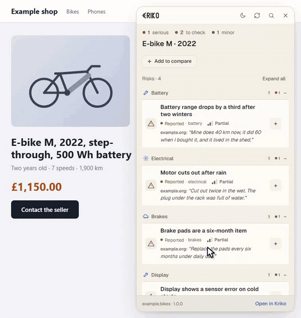
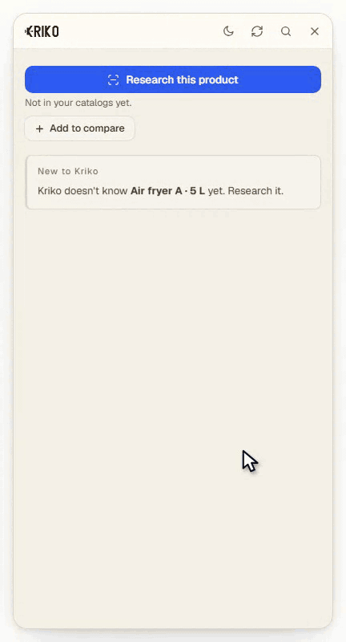
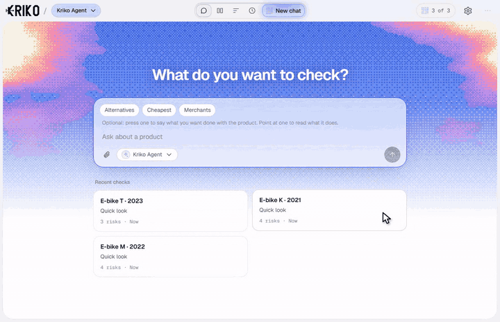
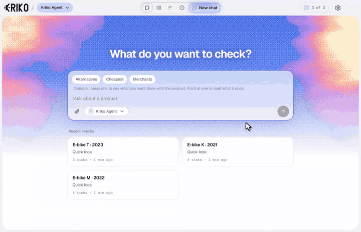
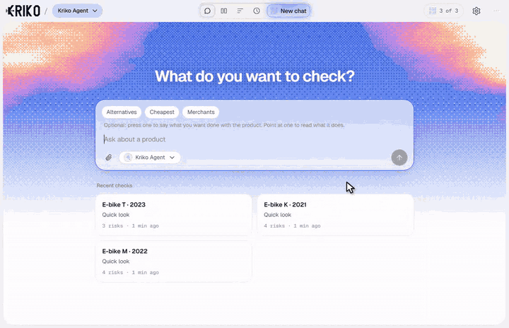

Guide
Kriko, step by step.
Each part is filmed in the real app with an invented product, so what you see is what you get. Nothing here needs an account.
Not installed yet? Four steps on the home page get you started.
01Check a listing
Open a product page.
On any shop or marketplace, press Alt + K or the toolbar button. Kriko's panel opens beside the page and lists what is known to go wrong with that exact product.
- The top line counts what is known: serious, to check and minor.
- Each finding says how well it is supported: Solid, Partial or Thin.
- Open a finding to read what was found, its source and a What to ask line: a question to put to the seller.
No findings is not proof that nothing is wrong. It means nothing sourced is known yet.

02Research something new
Ask about a product Kriko does not know.
When no catalog covers the product, the panel says Not in your catalogs yet
and offers Research this product. Pick the Quick Look agent that does the reading, add context if the listing leaves something out, and start.
- Kriko reads pages about that exact product and shows what it found, each finding with the words it quotes and where.
- A local agent is free and runs on this computer. An online agent is sent your question and the pages it read, and if it is a paid service it bills your own account.
- A finished quick look is saved on your computer, so it is there when you come back.

03Find a check again
Your checks are kept.
Every check is saved on your computer. Open the app and your recent checks are on the start screen. Open one to see all its findings, then open Evidence to read each source and its quote.
- Ask about the product below its findings, or choose Ask for fresh evidence to research the exact product again for current prices and availability.

04Compare
Line up the ones you are torn between.
Press Add to compare in the panel on each product, then open Compare in the app. Each product is a column. A finding that shows up in more than one product says so, for example Also in 1 of 2 others
.
- Turn on Differences only to hide what the products share.
- Rank these for me asks your agent to weigh the risks, the price history, the seller and what you told Kriko you need, and to name one.
- Look at each column's coverage first: a missing finding can mean nothing is known, not that nothing is wrong.

Differences onlyturned on and off.
05How much doubt to see
Choose how much doubt to see.
Some findings rest on little: one site alone says it, its best source is low in trust, its quote only partly matches its page, or it depends on a detail the listing does not state. Kriko marks those Thin.
Open Settings and, under Information sensitivity, choose Show everything, Hide thin or Strict. Hidden findings are counted, with a button to show them. This changes what is drawn, never what is stored.

Hide thinhides one finding and counts it. The product is invented.
06Keep it up to date
Catalogs and the app, kept current.
Catalogs you have installed update themselves about once a week. To add more, open More, then Catalogs, and choose Find release catalogs. On Windows, when a new version of the app is out, a notice appears in the corner of the window and you choose when to install it.
Closing the window does not stop Kriko, because the browser extension needs it. To stop it, choose Quit from its icon in the system tray.
07Your data and keys
It stays with you.
Your checks, history, shortlist and settings live on your computer. Keys you add stay there too. More, then Backup and restore, saves a copy of your work; the key files are left out of it.
Online research is the one thing that leaves your computer, and only to the provider you chose. The privacy policy covers every case.
Stuck, or something missing?
Open an issue on GitHub and say what you were doing when it went wrong.